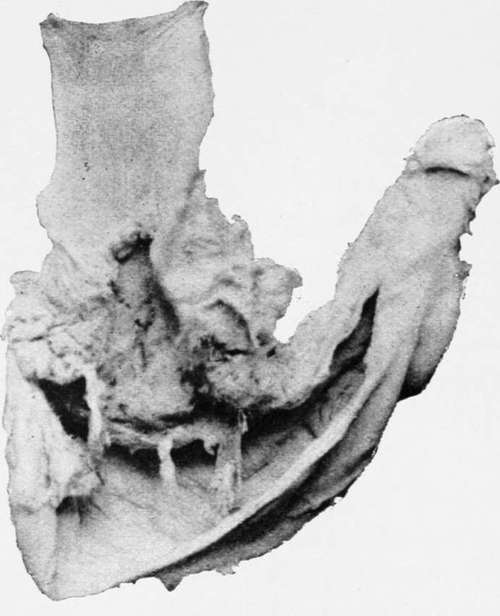
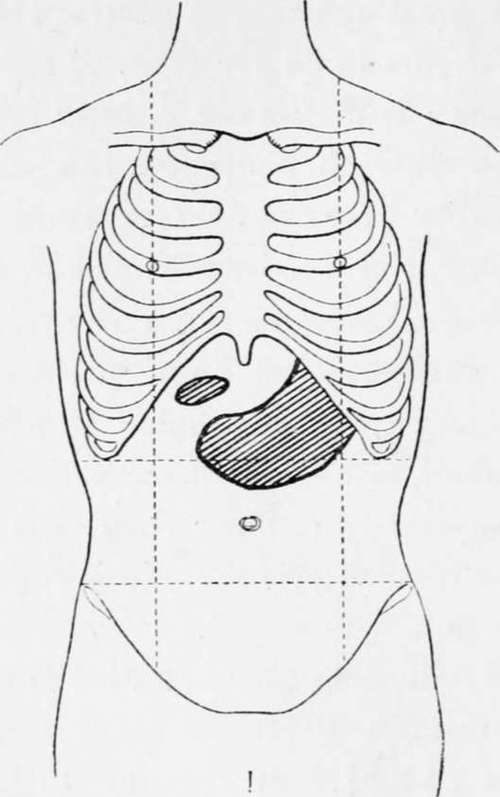

Ulcus Carcinomatosum. Part 2
Description
This section is from the book "Cancer Of The Stomach", by A. W. Mayo Robson, D.Sc, F.R.C.S.. Also available from Amazon: Cancer of the Stomach.
Ulcus Carcinomatosum. Part 2
Dr. Newton Pitt (4) drew attention to seventeen obscure gastric cancer cases that had occurred in Guy's Hospital, in which the main symptoms had been unconnected with the stomach. They are classified as follows :-
Group A. | Ascites and pleuritic effusion . | 7 cases |
„ B. | Matted intestine | 3 „ |
" C. | Intestinal obstruction | 2 „ |
„ D. „ E. | Abdominal suppuration . Profound anaemia . | 2 2 „ |
" F. | Iliac tumour | 1 case |
„ G. | Thrombosed veins . | ? " |
In all the gastric symptoms were trivial, and in many the stomach disease was only discovered at autopsy.
In the ordinary course the symptoms commence with loss of appetite and want of vigour, often coining on in an individual suddenly and without any apparent cause; loss of flesh is soon noticed, with pallor and shortness of breath, discomfort after food is usually felt, which may pass on to pain and a feeling of sickness, and after a time vomiting of food, little or much altered. At first the vomit is usually free from blood, but in the later stages, when the cancer begins to ulcerate, it is signalled by coffee-ground vomit. Rarely blood is vomited in quantity, and only very rarely does hamiatemesis assume a serious form in gastric carcinoma, though I have known it to directly cause death on four occasions. Pyrosis is frequently complained of in the early stages of the disease. The bowels are usually constipated. After a longer or shorter interval, weeks, or may be months, a tumour may develop in the epigastrium, and then the symptoms are usually so well marked that no doubt can be entertained as to the condition. Enlargement of the supra-clavicular glands on the left side and dulness beneath the left clavicle are important signs indicating advanced disease.
Cancer of cardiac orifice of the stomach. (No. 2422, Royal College of Surgeons' Museum.)
On quite a number of occasions I have been consulted for abdominal tumour due to cancer of the stomach without any of the characteristic signs, except general failure of health and loss of flesh, but in such cases the orifices of the stomach have not been involved in the growth. In the later stages profound anaemia, oedema of the limos, ascites and increasing weakness herald the approach of the end.
If the disease is at the cardiac end of the stomach, involving the cardiac orifice, the symptoms may resemble those of stricture of the oesophagus and be associated with dysphagia ending in an inability to swallow at first solids and later even fluid nourishment ; in such cases the tumour, being well under cover of the ribs, is difficult or impossible to palpate, but enlargement of the supra-clavicular glands on the left side is usually present.
If the pylorus be the part involved dilatation of the stomach with retention and decomposition of food and vomiting are pronounced symptoms, the vomiting, being at first irregular, perhaps every second or third day, soon becoming daily, and later occurring after every meal.
Visible peristalsis is not usually so marked as when the dilatation is due to simple stenosis, but it may be a prominent sign, and is then usually associated with pain that is relieved by vomiting.
If the disease attacks the centre of the stomach it may lead to hour-glass distortion with visible peristalsis of the proximal portion.
In some cases the neoplasm invades adjoining regions, as the pancreas, transverse colon, gall-bladder and bile-ducts and liver, producing characteristic symptoms such as jaundice and intestinal obstruction.
The special symptoms, pain, vomiting and tumour, may be considered more in detail.
Pain is very variable and may be entirely absent throughout the course of the disease, or there may be discomfort and fulness after food not amounting to actual pain. These painless cases Brinton gives as 8 per cent., Lebert 25 per cent., and Osier as 13.3 per cent.
In the majority of cases, however, estimated at from 80 to 90 per cent., pain is a prominent symptom. It may be continuous, with exacerbations after food, or may only be felt after meals, especially after solids have been taken.
When the pylorus is involved, leading to stenosis, peristalsis is usually accompanied by severe pain of a crampy character which is relieved by vomiting.
The pain is usually referred to the epigastrium, occasionally passing through to the back, especially in the left subscapular region, or even being only felt there.
As a rule tenderness is absent, the disease then presenting a great contrast to gastric ulceration.
Vomiting occurs in 85 per cent, of cases of cancer of the stomach ; it is usually a later symptom than pain. If the stomach is dilated, the vomit may be large in quantity every second or third day, and I have seen material vomited that had been taken three or four weeks previously ; the vomit may be offensive and fermenting, more so than is generally seen in ordinary cases of dilated stomach. If the stomach is small, vomiting usually occurs oftener and in smaller quantity ; but when the disease is involving the cardiac orifice there is regurgitation of food, but no actual vomiting.
Blood is vomited in about half the cases in my experience, though Professor Osier only gives it as a percentage of 28.1. It may be bright in colour and very profuse, though it is usually dark, like coffee-grounds. In four cases of cancer of the stomach I have known haematemesis to cause death.
Fever of a hectic type is present in about half the cases ; it is, however, irregular, and may be absent or the temperature may even be subnormal throughout.
Tumour is discoverable in about 80 per cent, of all cancers of the stomach, and it is most unfortunate for radical treatment that in such a large proportion of cases this sign should be waited for before the diagnosis is made and surgical treatment sought, for tumour is, as a rule, a late manifestation, and usually affords evidence that the disease is no longer local.
Though the presence of a tumour makes it probable that in case of removal of the growth there will be recurrence, yet the rule is not without exception, as in my own experience I have a patient living and well over six years, another over five years, and others at lesser periods after gastrectomy where tumours were perceptible before operation. Kocher and other surgeons have had similar experience.
Fig. 4.-Various positions in which tumour may be felt in cancer of the stomach.
Continue to:
Tags
stomach, operation, cancer, tumour, ulcer, gastric, gastrectomy